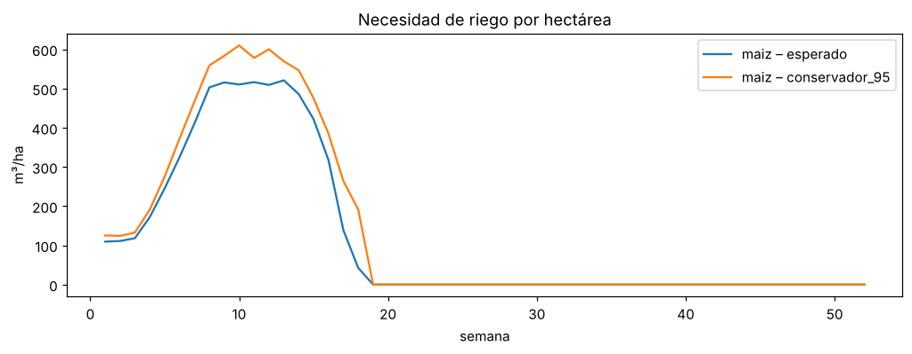
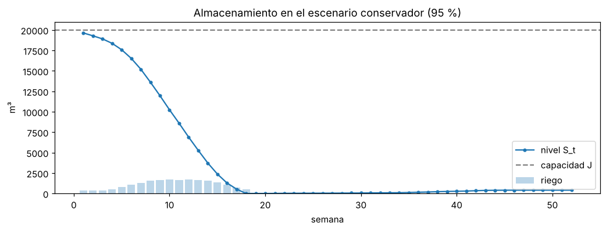

6. Decisión de siembra y reserva de agua#
Este capítulo usa el pronóstico de lluvia del modelo elegido en el capítulo 5 (el híbrido SVR + random forest para las semanas 1 a 4 y cuantiles climatológicos después) y los parámetros de la finca (en src/config.py) para calcular:
\(x_i^*\): hectáreas máximas de cada cultivo \(i\) sin que el almacenamiento se seque.
El agua de riego que debe reservarse durante el ciclo.
Formulación#
Necesidad de riego por hectárea (la lluvia sobre el cultivo ya se descuenta aquí):
Almacenamiento de capacidad constante \(J\) (condiciones normales), que se vacía con el riego y se llena con la lluvia de la captación:
Problema de decisión:
Para resolverlo como programa lineal, el \(\min(J,\cdot)\) se reemplaza por una variable de rebose \(V_t \ge 0\) y la cota \(S_t \le J\) (ver src/hidrologia.optimizar_cultivos).
Versión al 95 %: se usa el percentil 5 de la lluvia pronosticada y el percentil 95 de \(ET_0\). La garantía es por semana; la probabilidad conjunta sobre todo el ciclo es menor.
import sys, warnings
from pathlib import Path
sys.path.insert(0, str(Path.cwd().parent))
warnings.filterwarnings("ignore")
import numpy as np
import pandas as pd
import matplotlib.pyplot as plt
from src import config as cfg
np.random.seed(cfg.SEED)
plt.rcParams["figure.dpi"] = 110
from src import hidrologia as hy
faltan = (cfg.faltantes(cfg.FINCA, "FINCA") + cfg.faltantes(cfg.LLUVIA_EFECTIVA, "LLUVIA_EFECTIVA")
+ [f for c, d in cfg.CULTIVOS.items() for f in cfg.faltantes(d, f"CULTIVOS['{c}']")])
LISTO = not faltan
print("Parámetros completos." if LISTO else "Parámetros pendientes en src/config.py:\n " + "\n ".join(faltan))
Parámetros completos.
6.1 Escenarios semanales de lluvia y \(ET_0\)#
if LISTO:
df = pd.read_csv(cfg.DATA_PROCESSED / cfg.ARCHIVO_DATOS, parse_dates=["fecha"])
pron = pd.read_csv(cfg.DATA_PROCESSED / "pronostico_lluvia_semanal.csv")
g = df[df.punto == cfg.PUNTO_OBJETIVO].set_index("fecha")
ultima = g.index.max()
# ET0 semanal: cuantiles climatológicos por semana del año
et0_sem = g["ET0"].resample("W").sum()
woy = et0_sem.index.isocalendar().week.clip(upper=52).values
et0_q = pd.DataFrame({"et0": et0_sem.values, "woy": woy}).groupby("woy")["et0"]
semanas_woy = [min(52, (ultima + pd.Timedelta(days=7 * s - 3)).isocalendar().week) for s in pron.semana]
escenarios = {
"esperado": {"P": pron["P_q500"].values, "ET0": et0_q.median().loc[semanas_woy].values},
"conservador_95": {"P": pron["P_q050"].values, "ET0": et0_q.quantile(0.95).loc[semanas_woy].values},
}
pd.DataFrame({"semana": pron.semana, "fuente": pron.fuente,
**{f"P_{k}": v["P"] for k, v in escenarios.items()},
**{f"ET0_{k}": v["ET0"] for k, v in escenarios.items()}}).head(20).round(1)
# Tabla de escenarios (las tablas dentro de un "if" no se muestran solas)
pd.DataFrame({"semana": pron.semana, "fuente": pron.fuente,
**{f"P_{k}": v["P"] for k, v in escenarios.items()},
**{f"ET0_{k}": v["ET0"] for k, v in escenarios.items()}}).head(20).round(1) if LISTO else None
| semana | fuente | P_esperado | P_conservador_95 | ET0_esperado | ET0_conservador_95 | |
|---|---|---|---|---|---|---|
| 0 | 1 | modelo | 0.0 | 0.0 | 32.8 | 37.6 |
| 1 | 2 | modelo | 0.0 | 0.0 | 33.3 | 37.2 |
| 2 | 3 | modelo | 0.0 | 0.0 | 35.0 | 39.3 |
| 3 | 4 | modelo | 0.0 | 0.0 | 36.2 | 40.2 |
| 4 | 5 | climatología | 0.0 | 0.0 | 36.3 | 40.8 |
| 5 | 6 | climatología | 0.1 | 0.0 | 37.1 | 42.5 |
| 6 | 7 | climatología | 0.0 | 0.0 | 38.2 | 43.4 |
| 7 | 8 | climatología | 0.1 | 0.0 | 39.5 | 43.9 |
| 8 | 9 | climatología | 0.0 | 0.0 | 38.7 | 43.8 |
| 9 | 10 | climatología | 0.2 | 0.0 | 38.3 | 45.7 |
| 10 | 11 | climatología | 0.2 | 0.0 | 38.7 | 43.4 |
| 11 | 12 | climatología | 0.2 | 0.0 | 38.2 | 45.0 |
| 12 | 13 | climatología | 0.1 | 0.0 | 39.1 | 42.7 |
| 13 | 14 | climatología | 0.5 | 0.0 | 37.2 | 41.8 |
| 14 | 15 | climatología | 1.5 | 0.0 | 37.9 | 42.7 |
| 15 | 16 | climatología | 4.2 | 0.0 | 35.6 | 43.1 |
| 16 | 17 | climatología | 9.9 | 0.6 | 33.8 | 39.3 |
| 17 | 18 | climatología | 12.2 | 0.3 | 32.3 | 40.9 |
| 18 | 19 | climatología | 12.2 | 0.6 | 31.4 | 39.5 |
| 19 | 20 | climatología | 18.4 | 0.4 | 31.6 | 37.9 |
6.2 Necesidad de riego por cultivo#
SEMANA_SIEMBRA = 1 # semana (desde la última fecha con datos) en que se siembra
def matriz_NR(esc):
T = len(esc["P"])
pe = hy.lluvia_efectiva(esc["P"], **cfg.LLUVIA_EFECTIVA)
NR = np.zeros((len(cfg.CULTIVOS), T))
for i, (nombre, cult) in enumerate(cfg.CULTIVOS.items()):
kc = hy.kc_semanal(cult)
ini = SEMANA_SIEMBRA - 1
fin = min(T, ini + len(kc))
NR[i, ini:fin] = hy.necesidad_riego(kc[:fin - ini], esc["ET0"][ini:fin], pe[ini:fin], cfg.FINCA["eta"])
return NR
if LISTO:
NRs = {k: matriz_NR(e) for k, e in escenarios.items()}
fig, ax = plt.subplots(figsize=(11, 3.5))
for k, NR in NRs.items():
for i, c in enumerate(cfg.CULTIVOS):
ax.plot(range(1, NR.shape[1] + 1), NR[i], label=f"{c} – {k}")
ax.set_xlabel("semana"); ax.set_ylabel("m³/ha"); ax.set_title("Necesidad de riego por hectárea"); ax.legend(); plt.show()

6.3 Área máxima y reserva de agua#
if LISTO:
F = cfg.FINCA
b = [cfg.CULTIVOS[c]["b"] for c in cfg.CULTIVOS]
resumen = []
for k, esc in escenarios.items():
NR = NRs[k]
# Cada cultivo por separado (búsqueda binaria)
for i, c in enumerate(cfg.CULTIVOS):
x1 = hy.area_maxima_un_cultivo(NR[i], esc["P"], F["H"], F["J"], F["A_c"], F["C"], F["Q_ext"])
resumen.append({"escenario": k, "caso": f"solo {c}", "x_ha": round(x1, 2),
"agua_riego_m3": round(float(NR[i].sum() * x1))})
# Todos los cultivos a la vez (programa lineal)
r = hy.optimizar_cultivos(NR, esc["P"], b, F["H"], F["J"], F["A_c"], F["C"], F["Q_ext"])
resumen.append({"escenario": k, "caso": "mezcla óptima",
"x_ha": dict(zip(cfg.CULTIVOS, r["x"].round(2))),
"agua_riego_m3": round(r["agua_riego_total_m3"])})
pd.DataFrame(resumen)
# Resumen de la decisión: hectáreas y agua de riego por escenario
pd.DataFrame(resumen) if LISTO else None
| escenario | caso | x_ha | agua_riego_m3 | |
|---|---|---|---|---|
| 0 | esperado | solo maiz | 3.37 | 20143 |
| 1 | esperado | mezcla óptima | {'maiz': 3.37} | 20146 |
| 2 | conservador_95 | solo maiz | 2.84 | 20003 |
| 3 | conservador_95 | mezcla óptima | {'maiz': 2.84} | 20004 |
# ¿Cuánto cambia la decisión según el modelo de pronóstico? Área máxima de maíz con cada pronóstico
comparacion = []
for modelo, archivo in [("Híbrido (elegido)", "pronostico_lluvia_semanal.csv"), ("SVR lineal", "pronostico_lluvia_semanal_svr.csv")]:
p_ = pd.read_csv(cfg.DATA_PROCESSED / archivo)
for k, (col, et0) in {"esperado": ("P_q500", et0_q.median()), "conservador_95": ("P_q050", et0_q.quantile(0.95))}.items():
esc_ = {"P": p_[col].values, "ET0": et0.loc[semanas_woy].values}
NR_ = matriz_NR(esc_)[0]
x_ = hy.area_maxima_un_cultivo(NR_, esc_["P"], F["H"], F["J"], F["A_c"], F["C"], F["Q_ext"])
comparacion.append({"pronóstico": modelo, "escenario": k, "maíz (ha)": round(x_, 2), "riego del ciclo (m³)": round(float(NR_.sum() * x_))})
pd.DataFrame(comparacion)
| pronóstico | escenario | maíz (ha) | riego del ciclo (m³) | |
|---|---|---|---|---|
| 0 | Híbrido (elegido) | esperado | 3.37 | 20143 |
| 1 | Híbrido (elegido) | conservador_95 | 2.84 | 20003 |
| 2 | SVR lineal | esperado | 3.37 | 20157 |
| 3 | SVR lineal | conservador_95 | 2.84 | 20003 |
if LISTO:
k = "conservador_95"
r = hy.optimizar_cultivos(NRs[k], escenarios[k]["P"], b, F["H"], F["J"], F["A_c"], F["C"], F["Q_ext"])
sim = hy.simular_tanque(r["x"], NRs[k], escenarios[k]["P"], F["J"], F["A_c"], F["C"], F["Q_ext"])
fig, ax = plt.subplots(figsize=(11, 3.5))
ax.plot(sim.semana, sim.nivel_m3, marker="o", ms=3, label="nivel S_t")
ax.axhline(F["J"], ls="--", c="grey", label="capacidad J")
ax.bar(sim.semana, sim.consumo_m3, alpha=.3, label="riego")
ax.set_xlabel("semana"); ax.set_ylabel("m³"); ax.legend(); ax.set_title("Almacenamiento en el escenario conservador (95 %)"); plt.show()
print("Semana más crítica:", int(sim.loc[sim.nivel_m3.idxmin(), "semana"]), "| nivel mínimo:", round(sim.nivel_m3.min()), "m³")

Semana más crítica: 18 | nivel mínimo: 0 m³
6.4 Sensibilidad#
Como varios parámetros de la finca son estimaciones, se recalcula el área máxima variando la capacidad \(J\) y la eficiencia \(\eta\).
if LISTO:
c0 = list(cfg.CULTIVOS)[0]
esc = escenarios["conservador_95"]
filas = []
for fJ in [0.5, 0.75, 1.0, 1.25, 1.5]:
for eta in [0.6, 0.75, 0.9]:
pe = hy.lluvia_efectiva(esc["P"], **cfg.LLUVIA_EFECTIVA)
kc = hy.kc_semanal(cfg.CULTIVOS[c0]); T = min(len(kc), len(esc["P"]))
NR = hy.necesidad_riego(kc[:T], esc["ET0"][:T], pe[:T], eta)
x = hy.area_maxima_un_cultivo(NR, esc["P"][:T], F["H"], F["J"] * fJ, F["A_c"], F["C"], F["Q_ext"])
filas.append({"J (m³)": F["J"] * fJ, "eta": eta, "x máx (ha)": round(x, 2)})
pd.DataFrame(filas).pivot(index="J (m³)", columns="eta", values="x máx (ha)")
# Sensibilidad: hectáreas máximas según la capacidad J y la eficiencia de riego
pd.DataFrame(filas).pivot(index="J (m³)", columns="eta", values="x máx (ha)") if LISTO else None
| eta | 0.60 | 0.75 | 0.90 |
|---|---|---|---|
| J (m³) | |||
| 10000.0 | 0.95 | 1.18 | 1.42 |
| 15000.0 | 1.42 | 1.77 | 2.13 |
| 20000.0 | 1.89 | 2.36 | 2.84 |
| 25000.0 | 2.36 | 2.95 | 3.55 |
| 30000.0 | 2.84 | 3.55 | 4.25 |
Interpretación. Con los parámetros de ejemplo de la finca (reservorio de 20.000 m³ lleno al sembrar, 0,5 ha de captación y riego por goteo con η = 0,9) y siembra de maíz en la semana siguiente al último dato (comienzos de enero de 2026), el área máxima es de 3,37 ha en el escenario esperado y de 2,84 ha con 95 % de seguridad. En ambos casos se usa prácticamente todo el reservorio (unos 20.000 m³ de riego en el ciclo).
La siembra cae en plena temporada seca: tanto el híbrido (semanas 1 a 4) como la climatología (semanas siguientes) pronostican casi cero lluvia durante las primeras 15 semanas, mientras la ET0 semanal está entre 33 y 46 mm. Por eso el cultivo depende casi por completo del agua almacenada. La semana más crítica es la 18, al final del ciclo, cuando el reservorio llega a cero. Por la misma razón, la decisión es idéntica con el pronóstico del híbrido y con el del SVR: en esta época del año los dos pronostican lo mismo, y la diferencia entre modelos importaría en una siembra cercana a la temporada de lluvias.
El resultado depende sobre todo de la capacidad del reservorio y de la eficiencia del riego: con 10.000 m³ y riego por gravedad (η = 0,6) el área baja a 0,95 ha, y con 30.000 m³ y goteo sube a 4,25 ha. Antes de usar estos números para decidir hay que reemplazar los valores de ejemplo (H, J y A_c) por los medidos en la finca.